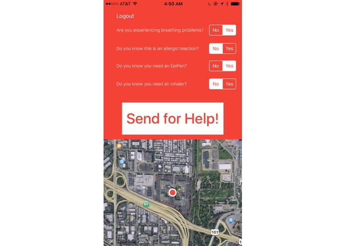

Hi. I'm Sohan Vichare.
I'm a high school senior living in the Bay Area. I've done research at the intersection of drones and AI, built apps for web and iOS, and acted in 7 plays/musicals.


I'm a high school senior living in the Bay Area. I've done research at the intersection of drones and AI, built apps for web and iOS, and acted in 7 plays/musicals.
Experience in drones, hardware and flight stack (Px4 and APM), neural Networks with Keras + Python, iOS dev. Completely self-taught. Check out some of my highlighted projects below. Code @ github and complete hackathon portfolio @ devpost.
As a contributor to a larger search and track project in the Intelligent Systems Laboratory, I was tasked with expanding the sensory capabilities of drones, focusing on thermal images and video. Work I did included building neural-network based person detection in thermal images and gun detection.
Hardware: FLIR Ax5 and FLIR Lepton mounted on a modified 3DR Iris. NVIDIA Jetson TX1 also onboard. Software stack: Keras and python for neural network analysis, Aravis + OpenCV for image preprocessing and thresholding.
The use of drones in search and rescue missions holds much promise, however, all deployed drones are controlled by humans, and camera data is analyzed by humans. Automation would increase efficiency and save manpower. Check out the paper.
Person Recognition: Self-trained SVM classifier. Utilized OpenCV HOG methods. Pathfinding: Implementation of the D* Lite pathfinding algorithm to to dynamically find the shortest path between the drone and the safe “goal” location while avoiding obstacles to the person. Due to its grid based processing, the algorithm worked perfectly after we modified its “world” to be a grid of latitude and longitudinal points. Drone flight stack: Raspberry Pi -> Pixhawk -> motors. Higher level code in Python. Leveraged dronekit.io.
Modernizing healthcare. View all patient data online, and run machine-learning driven tests on the data to gain probable diagnoses. Example coded: Heart Disease. Furthermore, access symptomatic treatment over SMS (for rural areas without WiFi). Built with Swift for iOS, Twilio, and Keras + Python.
About 232,000 new cases of melanoma are diagnosed worldwide each year, according to the World Health Organization. Melanoma is a type of skin cancer which arises due to in pigment cells called melanocytes [2]. Skin Cancer is the most prevalent cancer in the United States, impacting an astonishing 1 out of every 5 individuals in the nation [1]. Although Melanoma is not the most common type of skin cancer, it causes a large majority of skin cancer deaths [3], projected to cause over 10,000 deaths in America alone in the 2016 calendar year [1]. Detection of the cancer at its early stages can be vital to preventing the exacerbation of the health issue. Therefore, creating a tool for the rapid detection of melanoma - from a smartphone - can have an immensely positive impact.
To build Dermyx, IBM Watson along with a dataset of images webscraped from the International Skin Imaging Collaboration (https://isic-archive.com/#images) was leveraged. This was paired with computer vision to isolate the part of the arm and to edit the histogram of the image to optimize it for analysis. An iOS app was built to deliver the tech.
Sentry is an app that finds, identifies, and tracks armed militants through crowdsourcing. Through the iOS App, citizens can point their camera at armed militants and tap the screen to report them. To prevent people from reporting falsely, the images are analyzed to look for people and firearms (neural network analysis). Also, they can access militant data to know if they are in a high danger area. Finally, they can access a pathfinding tool to find the safest walking/driving path from their current location to another. The pathfinding algorithm avoids high-danger areas (areas with high concentrations of militants) within reasonable bounds. Militants are tracked from multiple phones through an implementation of SSIM tracking.
InformAR uses augmented reality to display information about various locations in your area. This means that you can point your camera at any building near you and instantly get information about it, superimposed in 3D space on the building. Simply tap on any location you see to get an Uber ride there. In addition to this, InformAR can recognize objects and instantly display information about them. This means that you can point your camera at any object and tap on it to instantly gain information about it. Software stack Swift for iOS. ImageNET in Keras + Python for image analysis. Google Places API for location data.
Crowdsourcing emergency response to save lives when 911 cannot get there fast enough. Winner at Los Altos Hacks.
A machine-learning driven homework scheduling application for students, originally built at HackingEDU, and worked on ever since. Built for Web, iOS, and Android.

An appetite to try everything I could during my high school years boiled down to a few key things that I love. Here they are.
I spend most of my time afterschool in rehearsal for a play/musical. I've attended California State Summer School of the Arts and am distinguished as a California Arts Scholar. Check out some of my work below.

I've been debating for four years, in Parliamentary Debate, World Schools Debate, and Extemporaneous Debate. All of these events have a significant impromptu component, and thus require a strong basis of knowledge of current events.